4Danh mục dự án: Danh mục & theo dõi
Các bước trong clip (11)
-
1. Danh sách dự án
Màn hình: PRJ-01 · Danh sách dự án
Danh sách dự án. Đây là danh sách, dành cho Chủ đầu tư, Sở Tài chính. Quản lý vòng đời dự án và phân cấp tổ chức hiệu lực theo thời gian. Trên màn hình có: Mã dự án, Chủ đầu tư, Nhóm, Trạng thái, Mã dự án TTQG, Giai đoạn PIMA và Lãnh đạo phụ trách. Lúc quay, màn hình đang có 3 dòng dữ liệu.
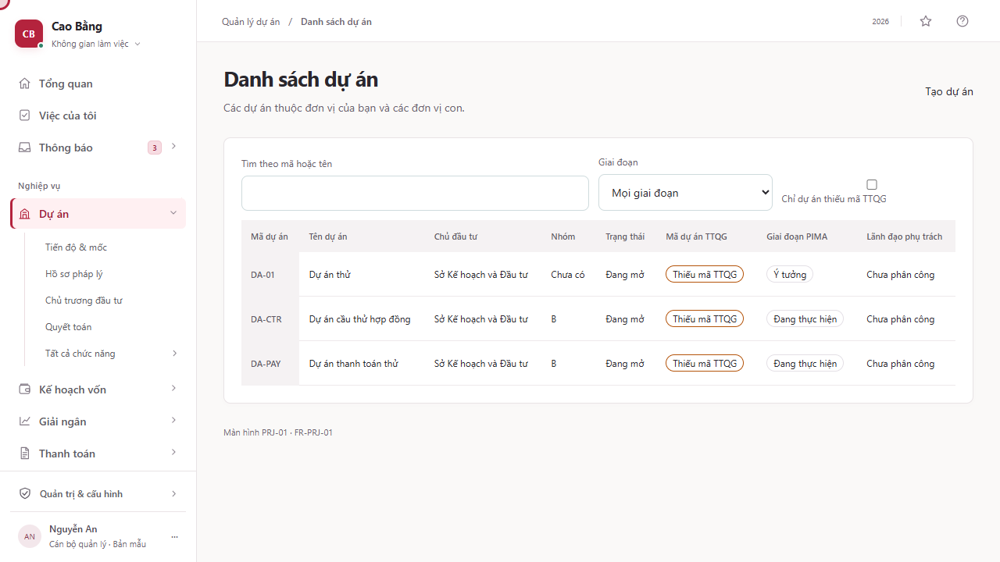
-
2. Tạo dự án
Màn hình: PRJ-02 · Tạo dự án
Tạo dự án. Đây là biểu mẫu để nhập thông tin, dành cho Chủ đầu tư, Sở Tài chính. Trên màn hình có: Mã dự án, Tên dự án, Chủ đầu tư, Địa bàn, Lĩnh vực, Tổng mức đầu tư, Nhóm dự án và Mã dự án TTQG. Các thao tác chính: Tạo dự án.
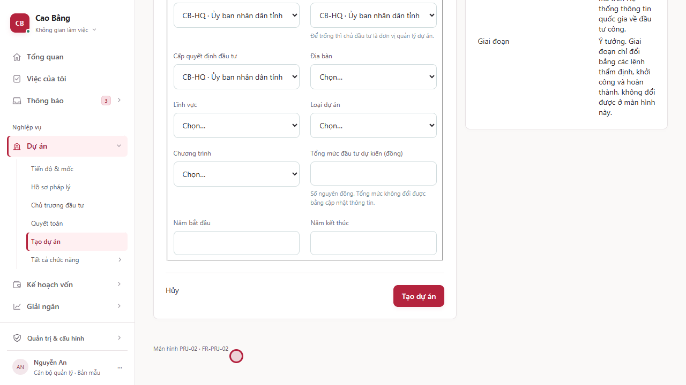
-
3. Không gian dự án
Màn hình: PRJ-03 · Không gian dự án
Không gian dự án. Đây là màn hình xem chi tiết, dành cho Chủ đầu tư, Sở Tài chính.
Thiết kế còn nêu các thông tin: Mục tiêu, Kế hoạch, Giải ngân và Vướng mắc. Màn hình ở bản hiện tại chưa hiện các mục này bằng đúng tên đó.
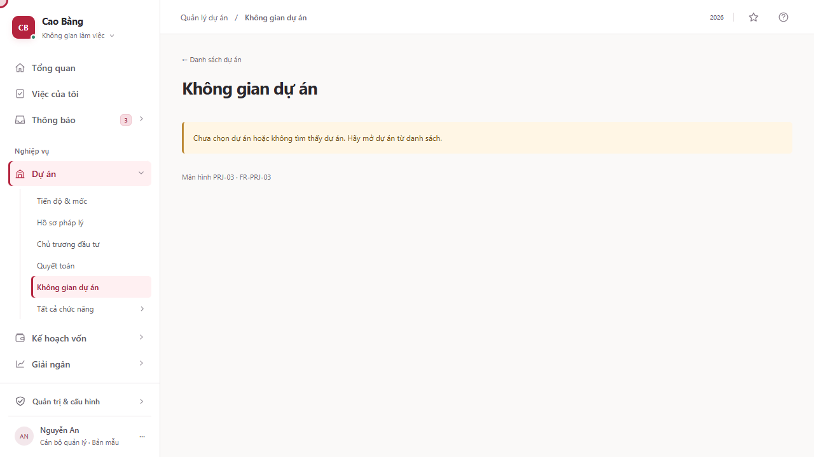
-
4. Tiến độ và mốc
Màn hình: PRJ-07 · Tiến độ và mốc
Tiến độ và mốc. Đây là dòng thời gian, dành cho Chủ đầu tư, Sở Tài chính. Trên màn hình có: Mốc, Ngày kế hoạch, Ngày thực tế và Phụ thuộc. Các thao tác chính: Thêm mốc.
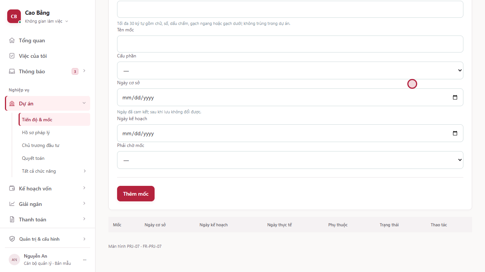
-
5. Nhóm thực hiện
Màn hình: PRJ-08 · Nhóm thực hiện
Nhóm thực hiện. Đây là danh sách, dành cho Chủ đầu tư, Sở Tài chính. Trên màn hình có: Dự án. Các thao tác chính: Quay lại / Thử lại. Lúc quay, chưa có dữ liệu nào trong màn hình này.
Thiết kế còn nêu các thông tin: Thành viên, Vai trò và Phạm vi. Màn hình ở bản hiện tại chưa hiện các mục này bằng đúng tên đó.
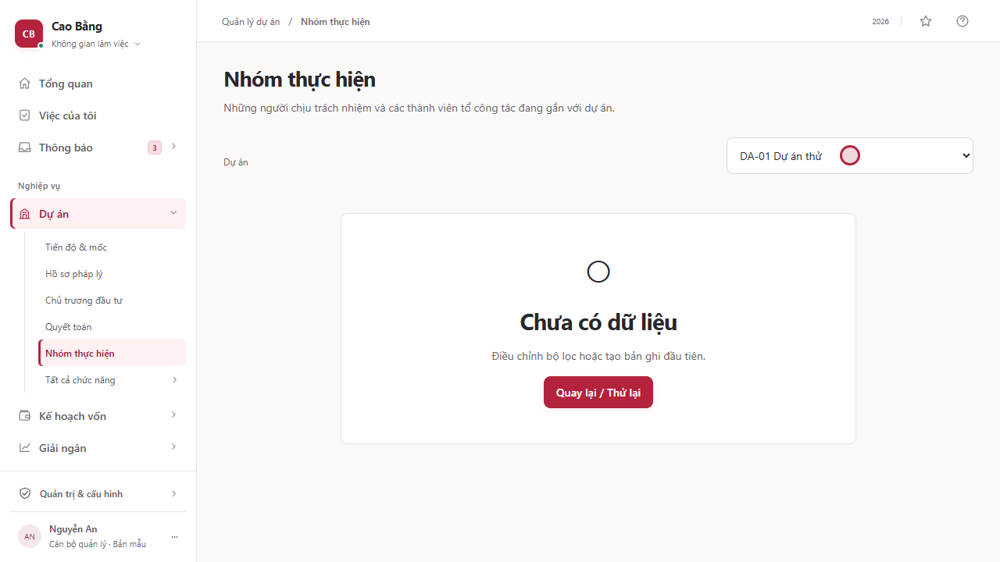
-
6. Theo dõi dự án tháng
Màn hình: PRJ-13 · Theo dõi dự án tháng
Theo dõi dự án tháng. Đây là bảng dữ liệu, dành cho Chủ đầu tư, Sở Tài chính. Trên màn hình có: Tháng, Dự án và Thuyết minh. Lúc quay, màn hình đang có 2 dòng dữ liệu.
Thiết kế còn nêu các thông tin: Tiến độ, Vốn và Vướng mắc. Màn hình ở bản hiện tại chưa hiện các mục này bằng đúng tên đó.
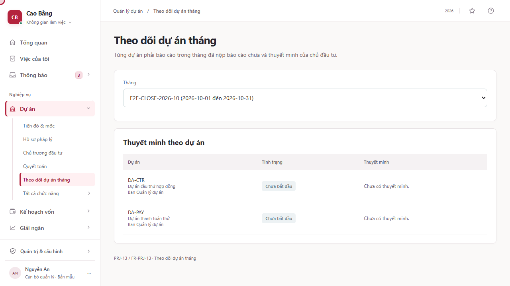
-
7. Ngân hàng dự án và vòng đời PIMA
Màn hình: PRJ-14 · Ngân hàng dự án và vòng đời PIMA
Ngân hàng dự án và vòng đời PIMA. Đây là màn hình, dành cho Chủ đầu tư, Sở Tài chính, lãnh đạo UBND. Trên màn hình có: Nhóm dự án, Điểm thẩm định và Lãnh đạo phụ trách. Các thao tác chính: Chuyển giai đoạn của dự án DA-01, Chuyển giai đoạn của dự án DA-CTR và Chuyển giai đoạn của dự án DA-PAY.
Thiết kế còn nêu các thông tin: Giai đoạn PIMA, Mã dự án TTQG và Sẵn sàng bố trí vốn. Màn hình ở bản hiện tại chưa hiện các mục này bằng đúng tên đó.
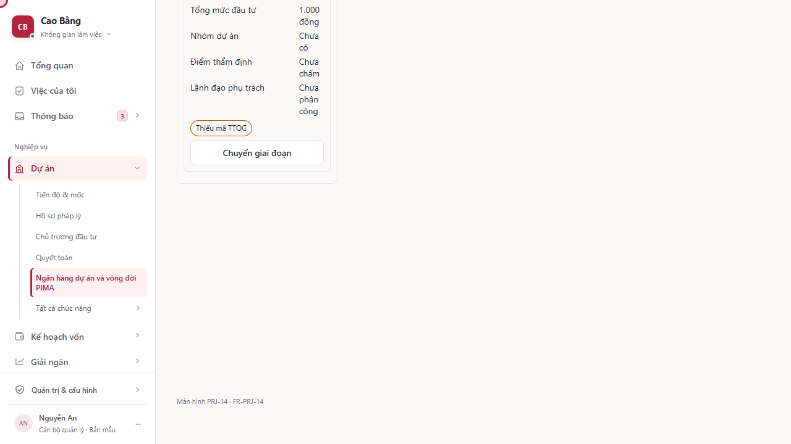
-
8. Sổ đăng ký rủi ro dự án
Màn hình: PRJ-16 · Sổ đăng ký rủi ro dự án
Sổ đăng ký rủi ro dự án. Đây là bảng dữ liệu, dành cho Chủ đầu tư, Sở Tài chính, lãnh đạo UBND. Trên màn hình có: Mã rủi ro, Nhóm, Khả năng, Tác động, Điểm, Người phụ trách, Biện pháp và Hạn. Các thao tác chính: Ghi rủi ro. Lúc quay, màn hình đang có 5 dòng dữ liệu.
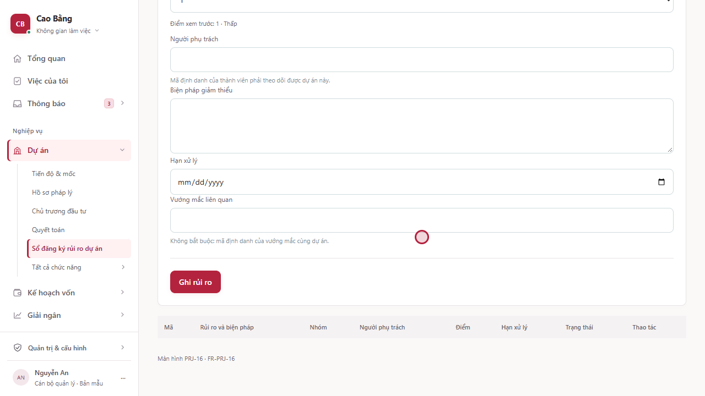
-
9. Phân công lãnh đạo phụ trách
Màn hình: PRJ-17 · Phân công lãnh đạo phụ trách
Phân công lãnh đạo phụ trách. Đây là bảng dữ liệu, dành cho Chủ đầu tư, Sở Tài chính, lãnh đạo UBND. Trên màn hình có: Dự án, Lãnh đạo phụ trách, Vai trò trách nhiệm, Văn bản phân công và Hiệu lực. Các thao tác chính: Phân công.
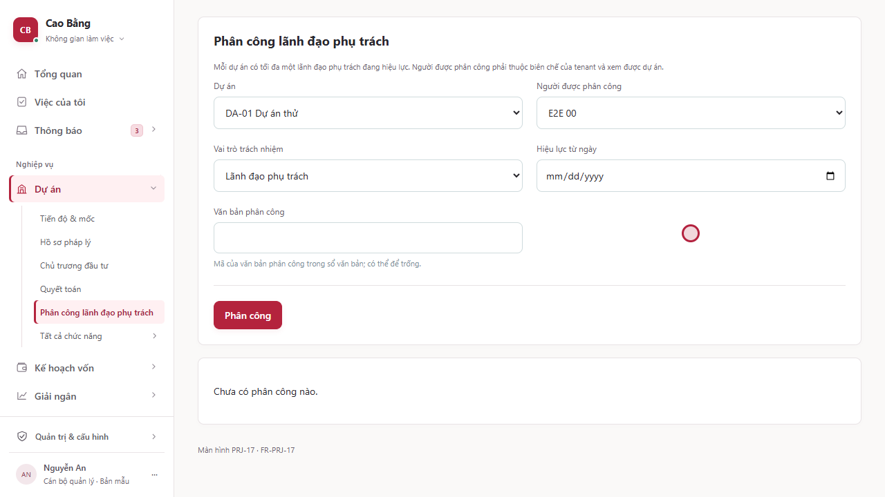
-
10. Tổ công tác đôn đốc giải ngân
Màn hình: PRJ-18 · Tổ công tác đôn đốc giải ngân
Tổ công tác đôn đốc giải ngân. Đây là danh sách, dành cho Chủ đầu tư, Sở Tài chính, lãnh đạo UBND. Trên màn hình có: Mã tổ, Trưởng tổ và Quyết định thành lập. Các thao tác chính: Thành lập tổ.
Thiết kế còn nêu các thông tin: Phạm vi đơn vị, Thành viên và Dự án theo dõi. Màn hình ở bản hiện tại chưa hiện các mục này bằng đúng tên đó.
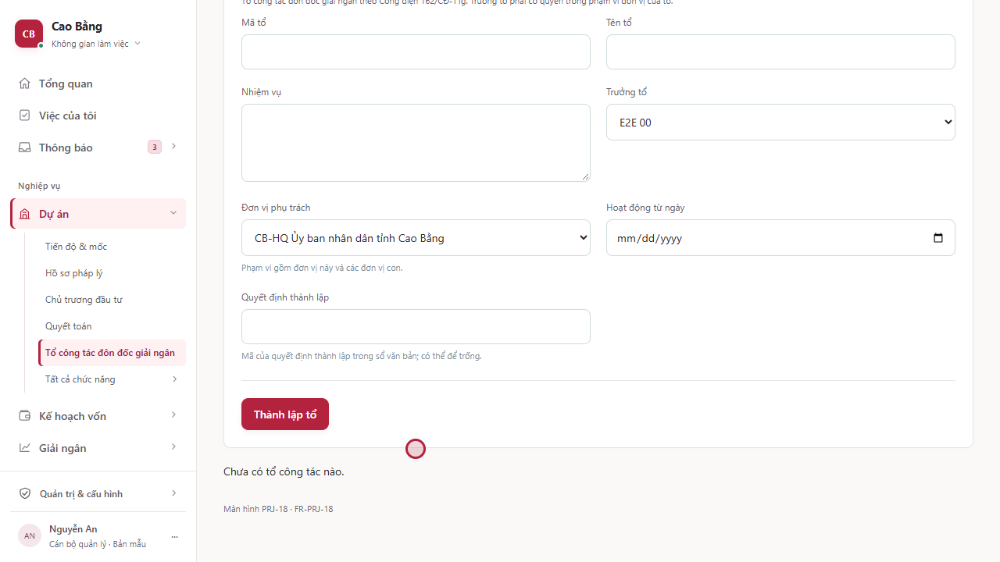
-
11. Mã dự án trên Hệ thống TTQG về ĐTC
Màn hình: PRJ-21 · Mã dự án trên Hệ thống TTQG về ĐTC
Mã dự án trên Hệ thống TTQG về ĐTC. Đây là màn hình, dành cho Chủ đầu tư, Sở Tài chính, lãnh đạo UBND. Trên màn hình có: Mã nội bộ, Mã TTQG và Trạng thái đối chiếu. Các thao tác chính: Tải lên và kiểm tra, Gán mã TTQG cho dự án DA-01, Gán mã TTQG cho dự án DA-CTR và Gán mã TTQG cho dự án DA-PAY. Lúc quay, màn hình đang có 5 dòng dữ liệu.
Thiết kế còn nêu các thông tin: Tệp nhập và Dòng lỗi. Màn hình ở bản hiện tại chưa hiện các mục này bằng đúng tên đó.
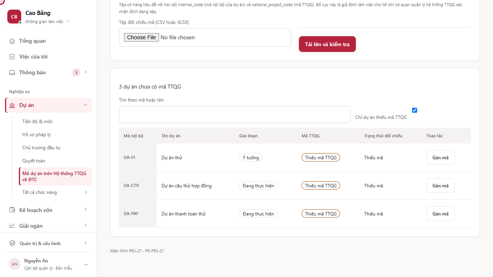